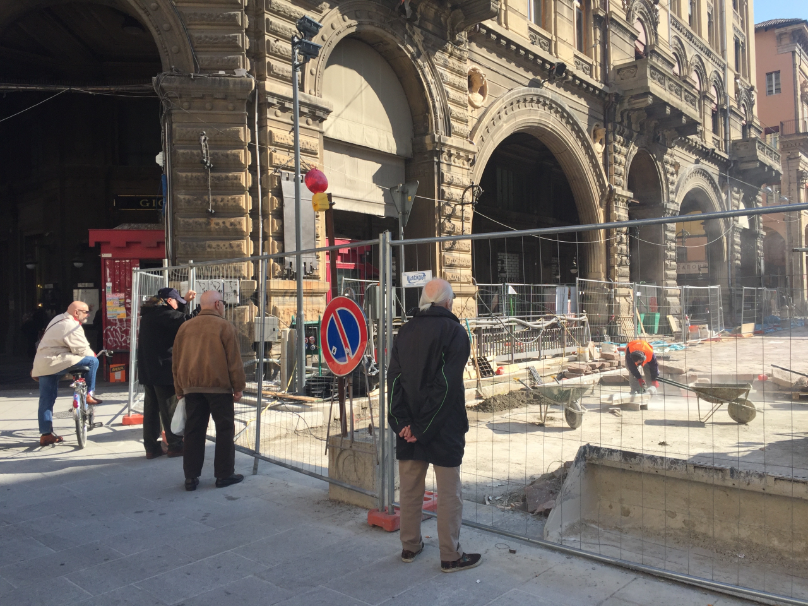
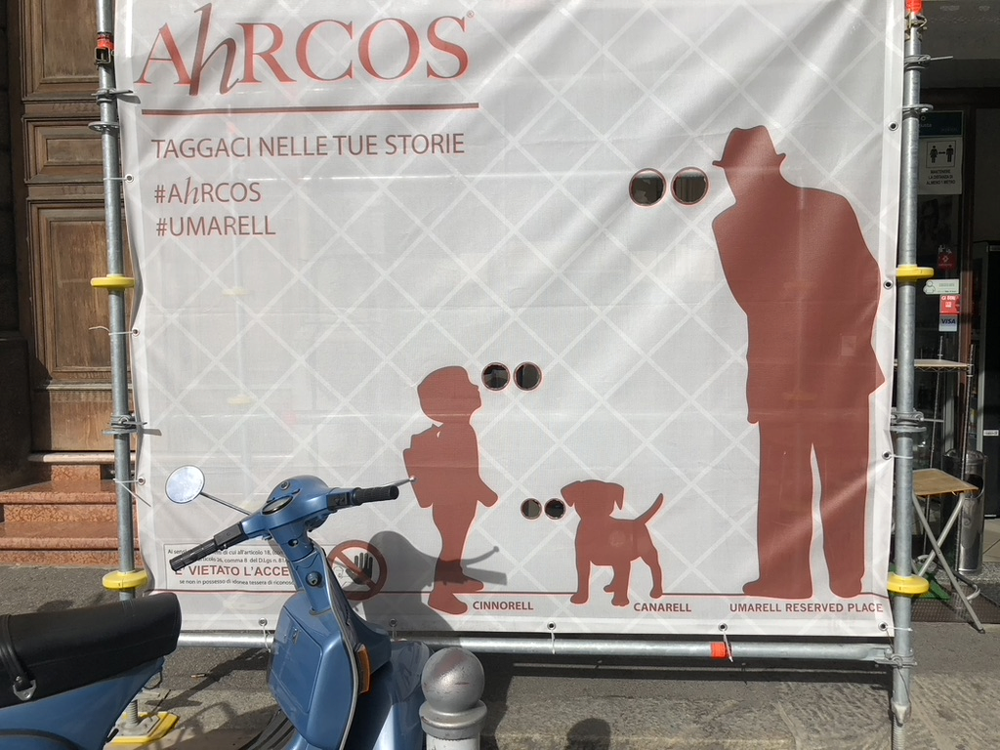

이탈리아에는 '우마렐(Umarell)'이라고 불리는 흥미로운 사회적 현상이 있습니다.
이들은 은퇴한 남성들이 뒷짐을 지고 공사 현장을 몇 시간 동안 가만히 지켜보는 것을 말하는데요.
장비가 잘 돌아가는지, 사람들이 일은 잘하는지 살피다가 가끔씩 묻지도 않은 조언(훈수)을 던지기도 합니다.
사회적으로 이분들을 너그럽게 이해해 주려는 분위기가 형성되어 있으며,
심지어 어떤 건설 회사들은 할아버지들이 편하게 구경하실 수 있도록 울타리에 전용 관찰 창을 만들어 주기도 합니다.
'우마렐'이라는 단어는 이탈리아 볼로냐 방언에서 유래했으며, '작은 사람'이라는 뜻을 담고 있습니다.
훈수는 못참지